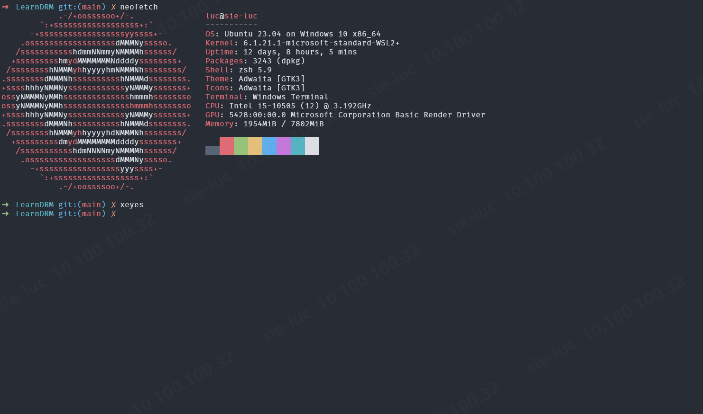
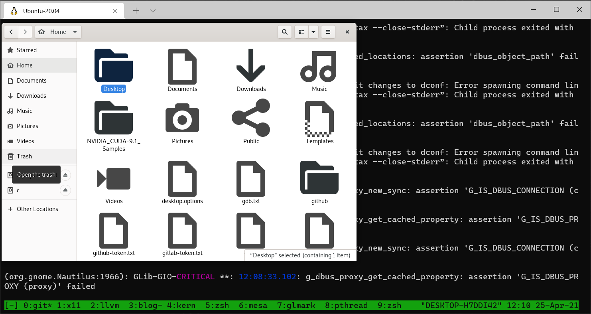
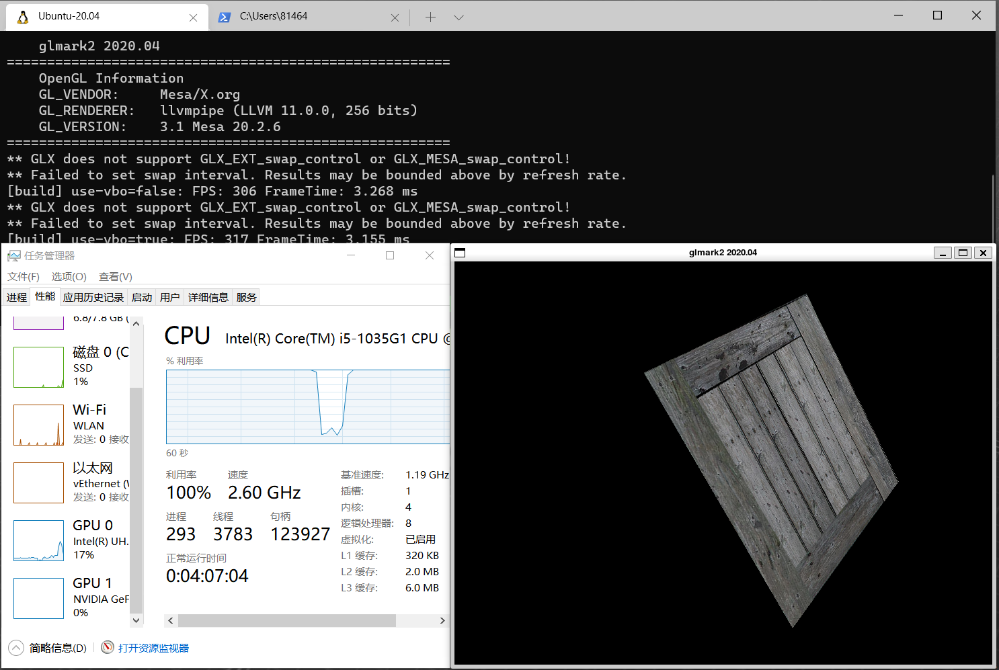

Windows Subsystem for Linux
WSL
WSL (Windows Subsystem for Linux)是一个能够在 Windows 系统(Windows 10及以上版本)上原生运行 Linux 可执行文件的兼容层。目前有两个版本: WSL, WSL2
查看 Windows 系统上的 WSL 版本
1 | wsl -l -v |
WSLg
Microsoft在Build 21364.co_release版本内发布了WSLg功能，该功能允许在WSL里运行X11和Wayland的客户端程序(GUI Application).

如果你已经加入Windows Insider Program计划并且也正在使用WSL2, 那么只需要如下操作即可激活WSLg功能。
1 | PS C:\Windows\system32> wsl --update |
升级 WSL2 后，在 /mnt 目录下会比原来多出一个 wslg 的目录
1 | ➜ ~ cd /mnt/ |
nautilus
1 | apt install nautilus -y |

glmark2

WSL 如何支持 Nvidia
在 /usr/lib/wsl/lib 下默认安装了这些 shared libraries (usermode driver). 而且搭配了自动生成的 /etc/ld.so.conf.d/ld.wsl.conf 文件，能够让动态库加载器正确找到 nvidia 相关的库。
- libcuda.so
- libcuda.so.1
- libcuda.so.1.1
- libd3d12.so
- libd3d12core.so
- libdxcore.so
- libnvcuvid.so
- libnvcuvid.so.1
- libnvdxdlkernels.so
- libnvidia-encode.so
- libnvidia-encode.so.1
- libnvidia-ml.so.1
- libnvidia-opticalflow.so
- libnvidia-opticalflow.so.1
- libnvwgf2umx.so
- nvidia-smi
LKM in WSL2
WSL2 上没有可加载的内核模块，因为所有模块是被直接编进内核的。如果 lsmod, 不会输出任何模块。 但我们仍可以通过查看内核配置文件找到有哪些模块被编译进内核了。